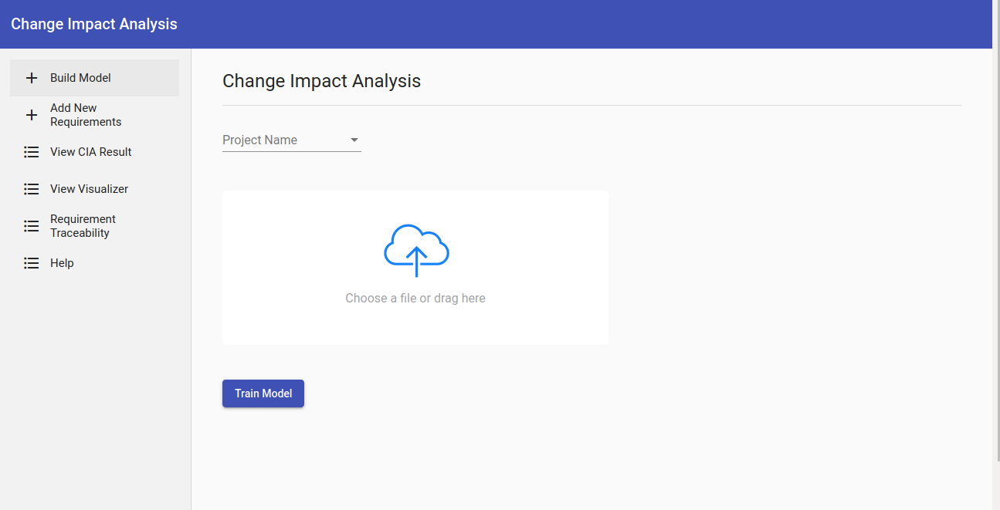

Criteria of the requirements dataset
The user should arrange the requirement file of a given project holding existing issues
according to the following criteria.
● The file type should be csv
● The first column should hold the issue key
● The second column should hold the issue description
Train model
Whenever a user proceeds with the process of identifying the impact of a new or
changed requirement on existing requirements, she/he should follow the following steps.
Click on “Build Model “ sidebar menu on the left top and
● Select the particular project name
● Upload requirement file of the specific project
● Click on “Train model”

Once the training is done, click on “Add requirement” sidebar menu on the left corner and
○ Enter new issue id
○ Enter the description of the new requirement
○ Click on “Check Similarity”
Check Similarity
The” view CIA result” window holds a table containing issue id , similarity value and the
description of the top 5 most related or most highly impacted requirements by the
addition of the new requirement into the project.
Verify validity of link between requirement and test case
The requirement traceability sidebar menu on the left opens a page where the user enters the
description of a requirement and the corresponding test case she/he wants to validate with.
Then the model will give as an output whether the links between the two are valid or not
meaning, whether they have strong link or weak link respectively.